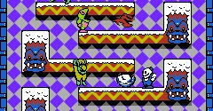
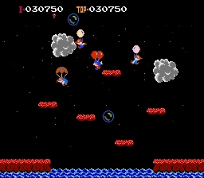

Retro Inspirations

Snow Bros.
The sense of progression in Snow Bros. is masterful. The core loop is understood in seconds, yet it provides a perfectly balanced experience that respects the player's time and skill.

Balloon Fight
A masterclass in timing and risk-reward mechanics. Its solid core loop design is a constant source of inspiration for many of my projects, proving that simplicity often leads to the most engaging gameplay.
General Philosophy
Both of these games are pillars of excellent level design. Their influence can be seen in many of my projects. Furthermore, as a tribute to this era, I often use the classic NES-32 color palette in my own pixel art and drawings.